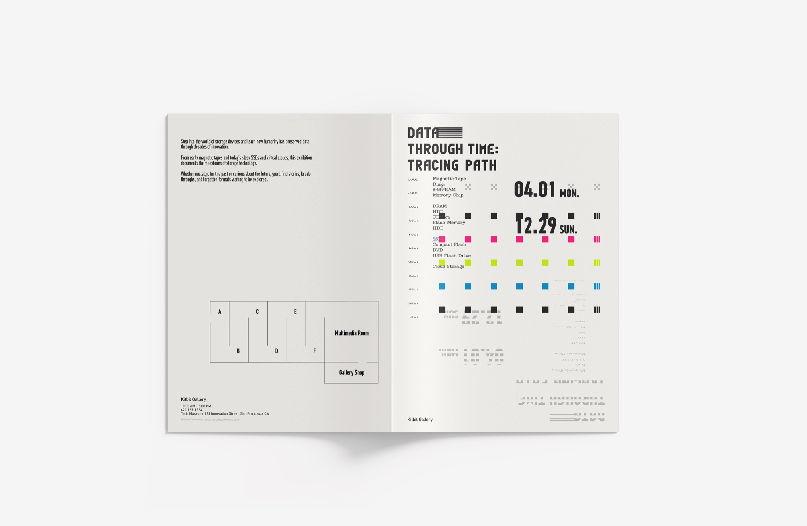
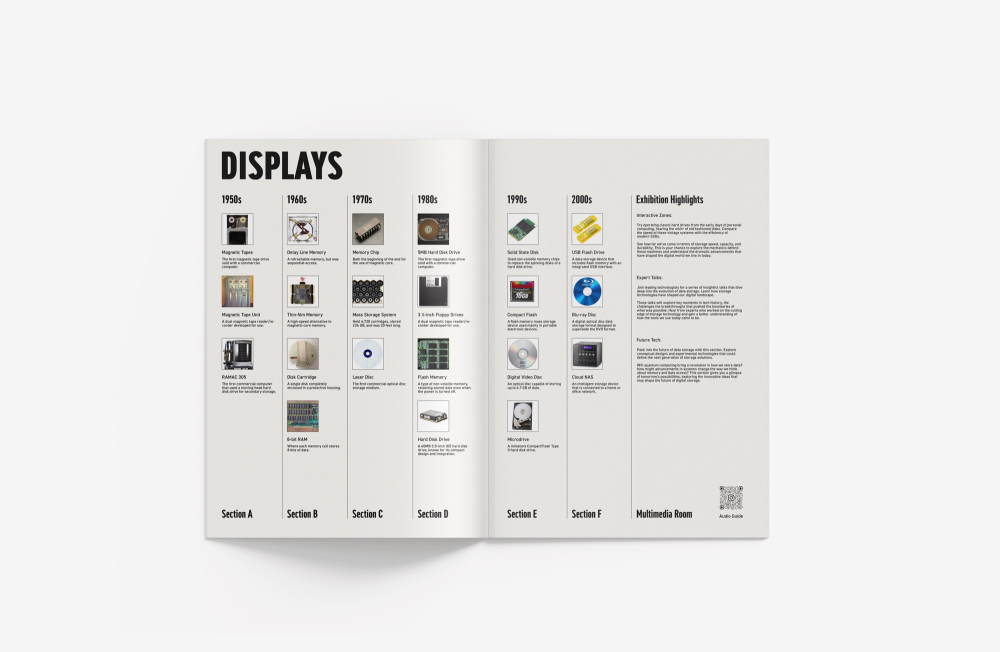
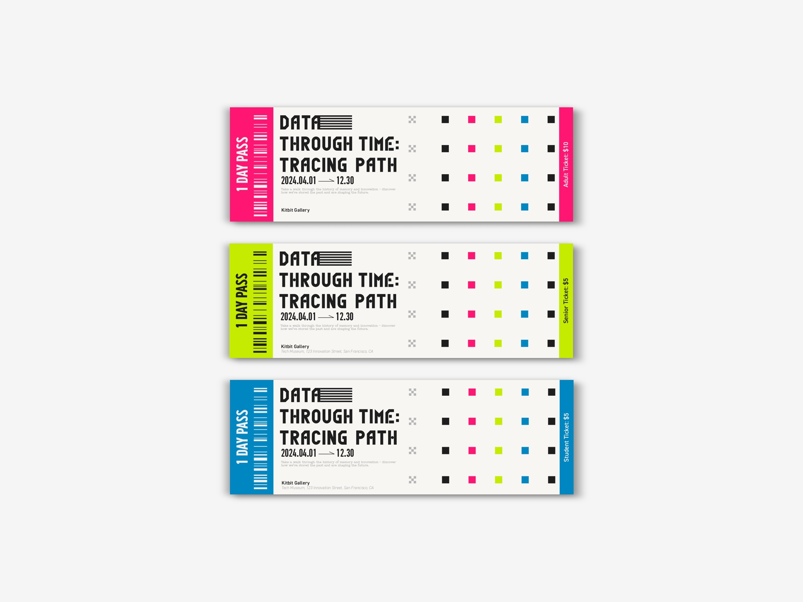
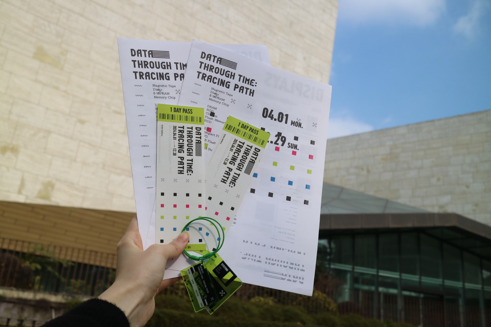
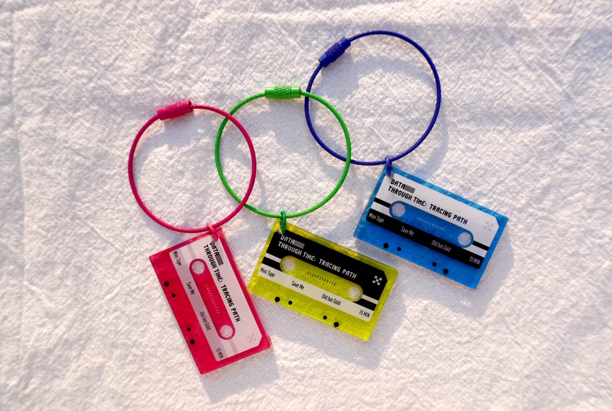
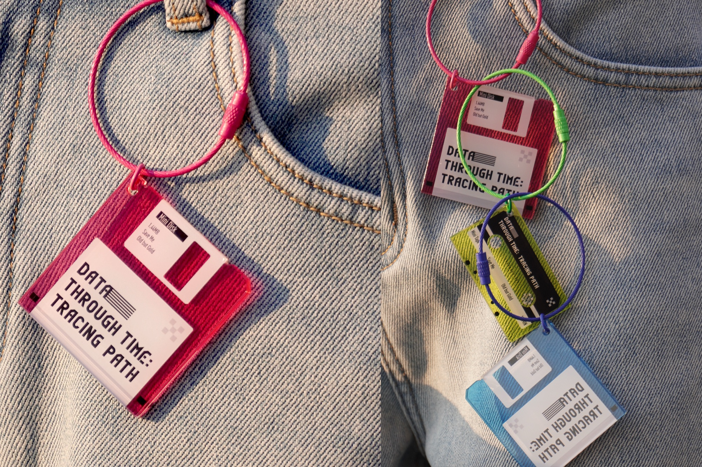

Data Through Time: Tracing Path: The visual system blends retro aesthetics with modern minimalism, inspired by early digital designs. It features printer nozzle patterns and repetitive square motifs, symbolizing fragmented yet enduring data storage and memory chips.
The exhibition targets on nostalgic storage device enthusiasts, tech lovers, and curious younger audiences, using a chronological layout to connect fast-growing digital eras and inspire on how data storage has, is, and will shape our digital lives.
Featuring pixel-like elements, 45-degree angles, and a palette of neon hues against muted grays and blacks, the design evokes nostalgia for vintage hardware while maintaining a clean, contemporary look.






